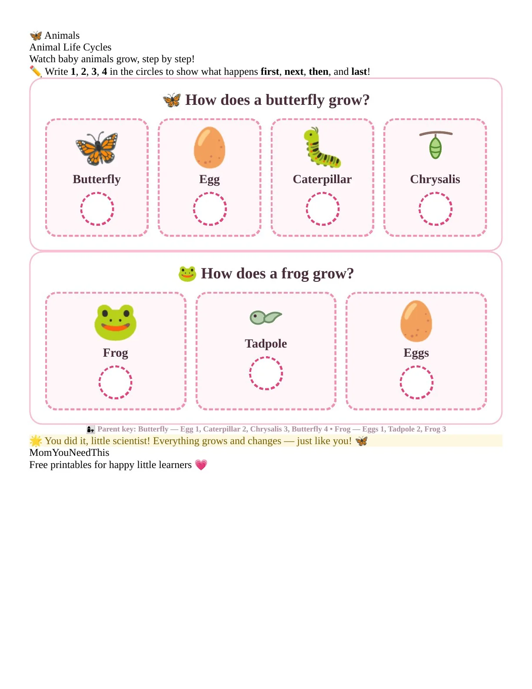

🐾 Animal Life Cycles How Animals Grow & Change
Watch a caterpillar become a butterfly and a tadpole turn into a frog. These simple activities introduce the magic of growing up in the animal world — perfect for curious little scientists.
Quick Answer
This free printable animal life cycles activity helps toddlers and preschoolers (ages 2–5) put growth in order: the butterfly's four stages (egg, caterpillar, chrysalis, butterfly), the frog's (egg, tadpole, froglet, frog), and the chicken's (egg, chick, hen). Kids order life cycle stages and discover the big idea — some animals transform completely, and some just grow bigger versions of themselves. Download and print at home with no signup needed.
At a Glance
- Ages: Toddlers and preschoolers (ages 2–5)
- Activity: Ordering animal life cycle stages (butterfly, frog, chicken)
- Skills: Sequencing and growth science
- Format: Printable worksheet (PDF)
- Cost: Free, no signup
A life cycle is a story with a strict order and a genuine surprise in the middle: the caterpillar does not grow wings — it dissolves and rebuilds into a different animal entirely. Ordering the stages is the worksheet skill; grasping that the frog in the pond was once a swimming comma with a tail is the wonder, and children are right to be astonished by it.
🐾 Explore Animal Life Cycles
Order life cycle stages — Egg → Caterpillar → Butterfly and Eggs → Tadpole → Frog — and discover how different animals change as they grow.
💡 How To Use This Activity
Print the life-cycle pages and lay the stages side by side: egg, caterpillar, chrysalis, butterfly. Let your child put the stages in order themselves before you confirm it — getting it wrong and fixing it is where the learning happens. Finish with the frog, and ask which stage surprises them most. The print button opens the full-size page in a new tab if you prefer to print from there.

🖨️ Download Your Free Animal Life Cycles Printable
Order life cycle stages — Egg → Caterpillar → Butterfly and Eggs → Tadpole → Frog — and discover how different animals change as they grow. Print it out, grab the crayons, and you're ready — no signup needed.
⬇️ Download Free Printable 🖨️ Print🎁 Free printable for toddlers & preschoolers
🦋 Two Ways To Grow Up
Way one: metamorphosis — the total rebuild. The butterfly lays eggs on a leaf; the caterpillar that hatches eats for weeks and sheds its skin as it outgrows it; then, inside the chrysalis, its body is taken apart and rebuilt — wings, antennae, a straw for a tongue — and the butterfly that emerges cannot even eat the same food its younger self ate. The frog does it in water: eggs in jelly, a tadpole with gills and a tail, legs budding, tail absorbed, lungs taking over — an animal that changes its breathing, its diet and its address in one lifetime.
Way two: growing — the same shape, bigger. A puppy is a small dog. A chick is a small, fluffy chicken (after the egg stage it simply grows). A human child is a small human. No rebuild, no disappearing act — just growth, practice, and time.
The comparison is the lesson: given a new animal, a child who knows the two ways can ask the scientist's question — “does it transform, or does it grow?” Ladybugs transform (their babies look like tiny crocodiles). Spiders grow. Fish mostly grow; frogs transform. The question works at every pond and garden for the rest of their life, which is more than most worksheets can promise.
Watch a Life Cycle Happen
The worksheet orders the stages; the garden shows them. All three of this page's animals can be watched in real life, slowly, across a spring and summer:
- Caterpillars — look on the undersides of leaves in the garden. A caterpillar that stops eating and hangs very still may be starting its chrysalis — check back each day.
- Tadpoles — a spring pond, or even a large puddle, can hold frog eggs and, a few weeks later, tadpoles with wiggling tails. Watch the legs appear across visits.
- Chicks and eggs — a farm visit in spring often means chicks. Compare the fluffy chick with the hen: same shape, bigger — the growing way, not the transforming way.
Bring the printable along in your head: at each visit, ask which stage you are looking at, and what comes next. That is the ordering activity, out in the wild.
❓ Animal Life Cycles FAQs
What activities are included in Animal Life Cycles?
This page collects our free animal life cycle printables in one place: ordering life cycle stages — Egg → Caterpillar → Butterfly and Eggs → Tadpole → Frog — and discovering how different animals change as they grow. Download the printable below and start learning right away.
Are these activities really free?
Yes — every printable on MomYouNeedThis is 100% free to download and print. No signup, no payment, just tap the download button. If a real caterpillar or a pond of tadpoles is anywhere in your child's life this spring, these pages become a field guide.
How do I use these activities with my child?
Print the life-cycle pages and lay the stages side by side: egg, caterpillar, chrysalis, butterfly. Let your child put the stages in order themselves before you confirm it — getting it wrong and fixing it is where the learning lives. Then ask the sorting question for other animals: transform, or grow? Puppies grow. Ladybugs transform. The question never expires.
What is metamorphosis?
Metamorphosis is the total-rebuild way of growing up: the young animal looks nothing like the adult. A caterpillar does not grow wings a little at a time — inside the chrysalis its body is rebuilt, and a butterfly comes out. Frogs do it too, changing from a swimming tadpole with a tail into a frog with legs and lungs.
How long does it take for a caterpillar to become a butterfly?
For a monarch, about two weeks of eating and growing as a caterpillar, then about two weeks inside the chrysalis — roughly a month from hatching to butterfly. Other butterflies run on their own schedules, and cold weather slows everything down.